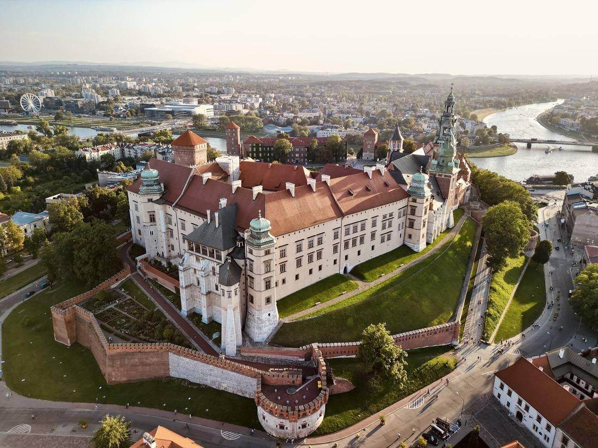

⚛️
Marie Skłodowska‑Curie
Born in Warsaw, she discovered polonium — and named it after Poland. She's the only person to win Nobel Prizes in two different sciences.
1903 & 1911

10 places that will steal your heart — and the stories behind them.
Medieval squares, castles built by crusader knights, a cathedral carved out of salt, Europe's wildest forest and mountains that touch the clouds. Here's where to go — and why.
Things you probably didn't know came from here.
Born in Warsaw, she discovered polonium — and named it after Poland. She's the only person to win Nobel Prizes in two different sciences.
Nicolaus Copernicus, born in Toruń, put the Sun — not the Earth — at the centre of the universe and changed science forever.
Polish mathematicians Rejewski, Różycki and Zygalski first broke the German Enigma code — years before Bletchley Park — and handed their secrets to the Allies.
Frédéric Chopin died in Paris, but asked for his heart to come home. It rests inside a pillar of Holy Cross Church in Warsaw.
Poland adopted Europe's first modern written constitution — second in the world only to the United States.
A trade union born in the Gdańsk shipyard grew to 10 million members and helped bring down communism across Eastern Europe.
Poland's famous dumplings come stuffed with potato & cheese, meat, cabbage — or sweet berries. There's a whole festival for them in Kraków.
“See you soon!” Come say hi at the Poland booth — and tell us which place you'd visit first.